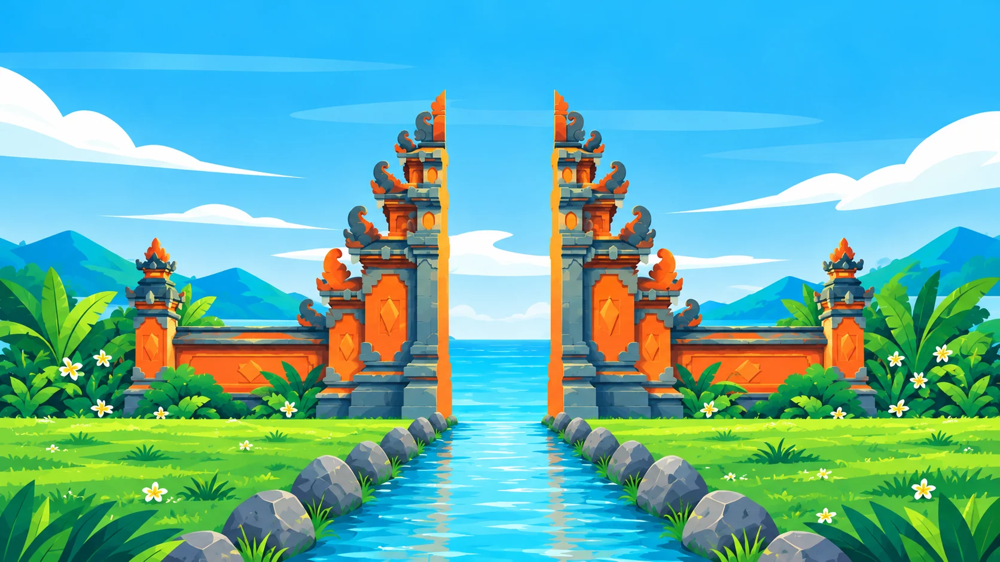
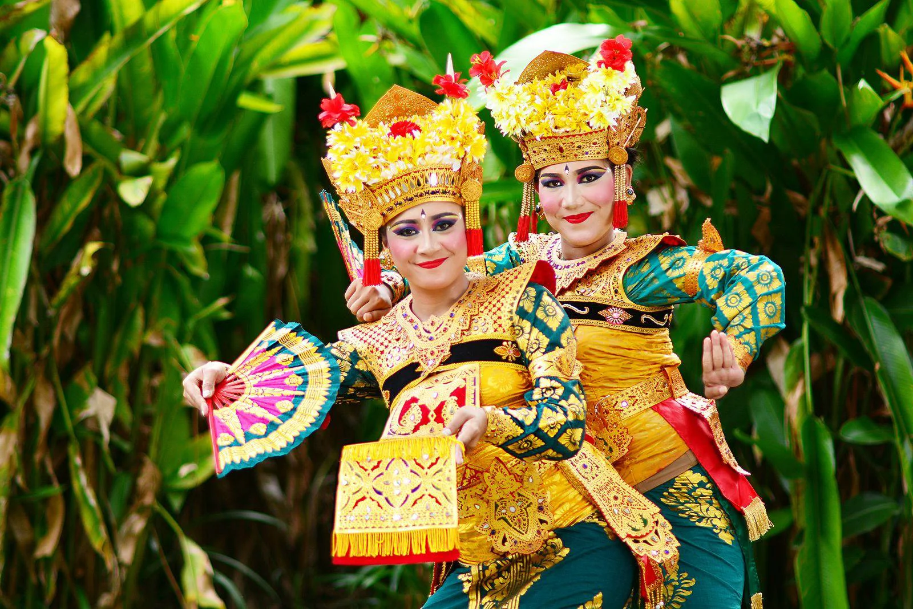
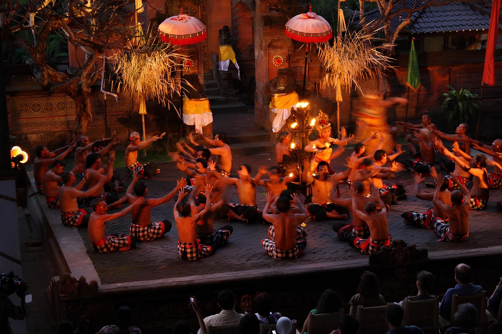
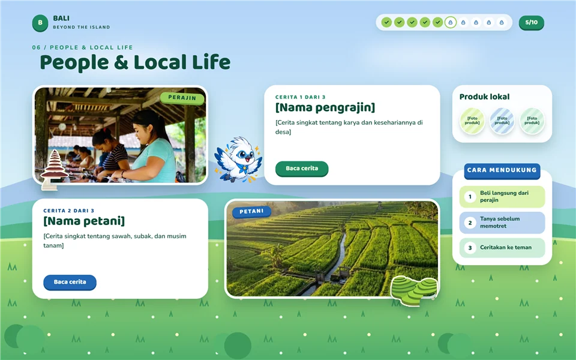

Seni & Warisan Budaya
Bali
Coba klik satu karya!


Tari Legong
Tari & GamelanTari Barong
Tari & Gamelan
Tari Kecak
Tari & GamelanTari Pendet
Tari & Gamelan
Pesta Kesenian Bali
Tari & GamelanGamelan Gong Kebyar
Tari & Gamelan
Kenali seni Bali,
mudah kok!
Pilih satu karya seni di bagian atas: tari, lukis, kain, atau ukir.
Baca catatan budayanya: makna, asal, dan konteks.
Buka Living Culture, selesaikan 6 level untuk membuka badge Penjaga Tradisi.
Mulai Eksplorasi Sekarang!
Klik tombol di bawah untuk langsung menuju panggung seni budaya.
🛒 Tahu sebelum membeli
Siap menjelajah?
Setiap tari, lukisan, kain, dan ukiran menyimpan taksu serta filosofi luhur Bali.
Buka wawasanmu, amati keindahannya lebih dekat, dan kumpulkan seluruh lencana budayamu!
Lihat 3 karya seni di panggung atas untuk membuka badge Sahabat Seni.
🎭 Tahu sebelum menonton
Budaya yang Hidup
Ikuti jalan setapaknya, buka satu cerita demi satu.

Di Bali, setiap hal kecil punya makna.
Kalender Hari Raya Bali
Tanggalnya bergeser tiap tahun karena mengikuti kalender pawukon dan sasih.
Januari 2027
Januari 2027
Galungan
Rabu, 13 Januari 2027Kemenangan dharma atas adharma. Penjor berdiri di tepi jalan.